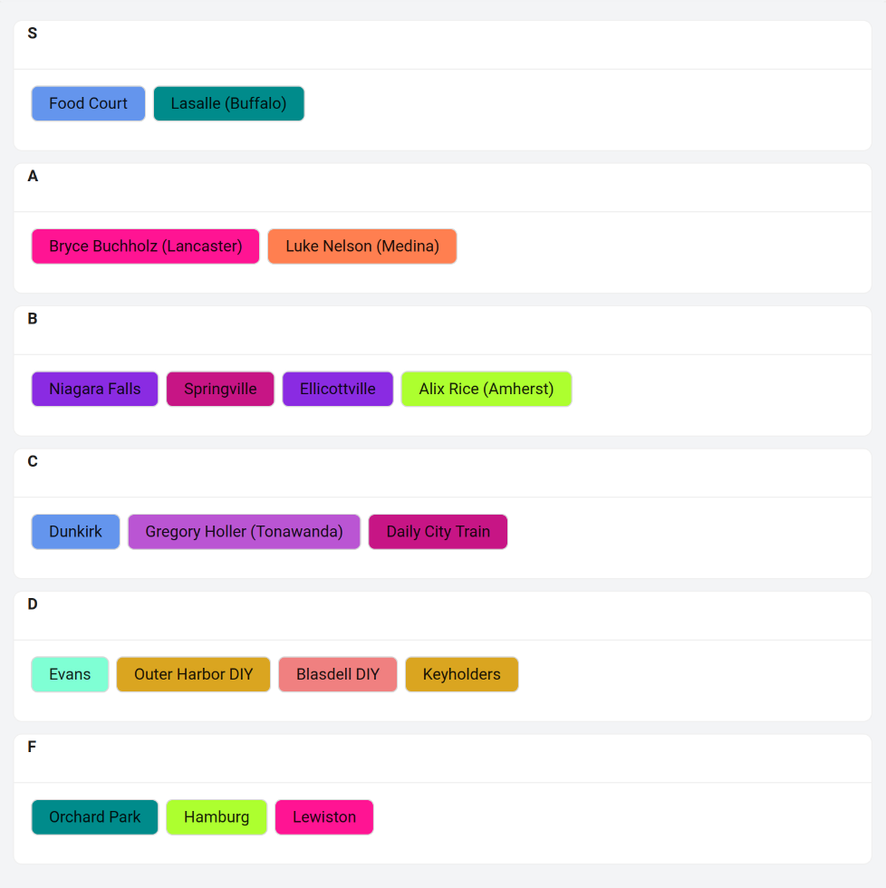

Local skatepark tier list
2024/02/08
This is my tier list for skateparks in and around Buffalo, New York. Only skateparks within an hour's drive of downtown Buffalo are included. Skateparks that are in Canada (Fort Erie) or attached to skateshops are excluded.
The tier list is below. A brief explanation for each skatepark follows. There are no pictures here, but I made a website with photos of each skatepark at skatebuffalo.com.
S
Food Court
This skatepark has everything, and it's indoors. As a beginner I would go elsewhere, as most elements are on the steeper or larger side.
Lasalle (Buffalo)
This skatepark has everything. Unfortunately it's probably the busiest skatepark in the area.
A
Bryce Buchholz (Lancaster)
This skatepark has a good variety of features, including some unusual featues such as a few ride-on grinds and a small but aggressive halfpipe. I love the bank-to-A-frame-to-quarter-pipe line. However, some things are a little unusual. For example there's no manual pad and the only ledges are quite tall.
Luke Nelson (Medina)
A great skatepark. Great variety of features. It has a bowl and a three-sided bowl, which could be nice for learning carves. There are smaller quarter pipes, which are nice for learning new tricks on. And there're plenty of street obstacles.
B
Niagara Falls (USA)
This skatepark has all the fundamentals. It could be one of the best in the area, but the concrete needs work. For example the surface of the miniramp is so bad it's probably unusable. This is a shame, because it's one of the only real miniramps in the area.
Springville
This is a beautiful new skatepark with good variety in a small town.
Ellicottville
It's a new park, so it's in great shape. The street section is small without much variety. But there's a huge bowl that takes up about 2/3 of the park.
Alix Rice (Amherst)
Everything here is a little unusual. There are two bowls (which look like they may need some Bondo). This park has more 2-ft quarter pipe than any other park in the area, which is great for beginners. However, the boxes are in weird spots (next to bowls, which scares me). And the only rails are unusually tall.
C
Dunkirk
It's a pre-fab park but the elements are concrete. The variety here is great. There's even a good area for flat-ground. However in some places the concrete needs to be patched. Some elements also need repairs. It's great if you live near Dunkirk. If not, you can probably find a better version of each feature at a closer skatepark (except for the volcano).
Gregory Hayes Holler (Tonawanda)
It's a small park with most of the basic elements. However some of the elements are strange. For example you would need to ollie up to the manual pad from a bank. And the hip is oddly steep on one side.
Daily City Train
It's a small indoor park. In my opinion it's better suited to advanced skaters. But even new skaters could practice things like turns on banks or transition, boardslides, and 50-50s.
D
Evans
This is a pre-fab park with features that are falling apart. But for the most part they're still functional. The surface is acceptable, but the park is on a slight grade. What I like about this park are the quarter pipes; they're mellower than usual, which makes it easier to learn new tricks.
Blasdell DIY
There are some nice ledges here. Also some fun transition elements, like a tiny spine and a small but aggressive quarter pipe.
Outer Harbor DIY
In some places the concrete is rough. There's not a great variety of obstacles here. Also the features are in questionable condition. But there are some unique elements:
- the entire middle of the park, which is one big manual pad
- a small quarter pipe with parking block coping, opposite a steep bank for wallies
- crud that you can ollie over
Keyholders
If you like vert, this would probably be S-tier; but I'm not interested in vert. I last went here in January 2023; I know the layout has changed a little since then, so keep that in mind. The place is dirty and dusty, at that was back when it had been opened for 3 months. At the time I felt like there was very little I could do without being comfortable on 4-ft transition. It's quite busy during public hours. Unless you have a membership, expect the park to be crowded when you go.
F
Orchard Park
It's a pre-fab park with a rough asphalt surface and features that are falling apart.
Hamburg
It's a pre-fab park with a rough asphalt surface and features that are falling apart.
Lewiston
It has things like banks, a rail, stairs, and a manual pad. But everything is weird.
Honorable mentions?
Lockport
I never skated the wooden Lockport skatepark. And at the moment the concrete skatepark is in progress.
Alden
According to the town, it's closed for repairs. When I went here last, the features were stashed in a corner of the park. Hopefully the skatepark is restored soon, if it hasn't been already.